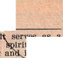

FOR UNITED STATES OF AMERICA
APRIL 1971 “You will be witnesses of me ... to the most distant part of the earth.**—Acts 1: 8. VOL. XIV NO. 4
FOR UNITED STATES OF AMERICA
APRIL 1971 “You will be witnesses of me ... to the most distant part of the earth.**—Acts 1: 8. VOL. XIV NO. 4
Since we wrote you last month. Brother Knorr has returned to Bethel from his service tour through Africa and Europe. He told us some of the heartwarming experiences that occurred along the way.
Flying between points in Africa, lie had an experience that, as lie put it, made him think of the angelic help we have. Obliged to lay over for a while at the airport in Cameroon, where our brothers have been, severely persecuted, he was approached by a man asking, “Are you Nathan II. Knorr?” When he replied that lie was, the man extended his hand, saying, “I am your brother.” Another brother, a congregation servant, was witli him. Tlie two brothers just happened to be there at the airport, having no idea ithat Brother Knorr would be passing through. They were delighted to ‘'receive news from the “outside,” inasmuch as no literature had arrived for some months. A thrilling experience indeed.
Brother Knorr also reported that our brothers in Malawi now enjoy relative peace. Though there is still a ban on our work, if anyone physically molests the Witnesses, the molester is the one who is severely punished by the police.
As you know, the Kingdom activity in Spain can at last be done in a public manner. During his visit there Brother Knorr was able to speak to 14,569 in meetings in Madrid and Barcelona. The brothers in Barcelona were so happy that, after singing a song together, they burst into spontaneous applause.
On March 7 we here at Bethel saw the fiftieth class of Gilead graduate. Now over 5,000 students have completed that schooling, and the ones from this last class are on their way to nineteen lands for missionary work.
We live in grand times. May we all share fully in the work to be done, always preaching God’s kingdom with the right viewpoint.
/ Your brothers,
Brooklyn Branch Office
What Will the Memorial Move You to Do?
1 What a heartwarming occasion the Memorial is! It does us so much good to spend that time concentrating our thoughts on the one whom God has made our Lord and Savior, reviewing what God has done for us through him. As we sit there we may think of this great earthly globe turning on its axis and how congregations to the east of us have already met together, while those to the west of us will soon be doing the same, so that God’s people spread over the face of the earth are all doing the same thing as we are doing, all on the same night. It draws us together in a special way.
2 And what is it that stays with us after the Memorial celebration ends? True, we feel very elated when the number present is large, as it so often is. Just think, last year more than 3,226,000 persons attended world wide. This is so encouraging, for it indicates God’s blessing on us. But, stimulating though such a big attendance may be, tlie main thing in our memory should be, and undoubtedly is: what our Lord Jesus Christ did in fulfillment of his Father’s purpose. We met together ‘in remembrance of him.’—1 Cor. 11:24, 25.
3 So we sincerely want our tongues to be among those that “openly acknowledge that Jesus Christ is Lord to the glory of God the Father.” (Phil. 2:10, 11) During April how can we be sure of doing this?
4 Daily we want to live good, clean, wholesome lives, demonstrating that we do, indeed, know God’s Son and imitate him. We want to show love for our mates and families in all ways, but, above all, in spiritual things. And, “as long as we have time favorable for it,” we want to work “what is good toward all, but especially toward those related to us in the faith.” (Gal. 6:10) We want to use our tongues to upbuild our brothers and sisters, encourage them in right works, so that their tongues continue acknowledging Jesus Christ as Lord. Visit them, converse with them, invite them to share with you in meeting together and in declaring the good news of God’s kingdom together. Show the same warm love for them that God’s Son showed for his disciples.
5 Certainly we also want to remember God’s Son by showing compassion like his for those on the outside, those not “related to us in the faith.” Today as never before they are truly “sheep without a shepherd.” (Matt. 9: 36) How good to have the fine special issues of the Watchtower and Awake! magazines to bring to them right in their homes or anywhere else where we have opportunity to talk with them. And how much easier it is for us to interest them because of having such timely material as the article on the “Restoration of All Things of Which God Spoke” in The Watchtower and the Awake! material on “Earth’s Future—Garbage Dump or Garden Home?”
8 Some of these persons now study with us In home Bible studies. They indicate they want to become part of God’s great family, to be under the headship of our Lord. Since tlie start of the service year last September, thousands of such persons throughout the land have spent as much as six months in Bible study. Are they now ready to use their tongues in acknowledging Christ Jesus as Lord to still others? Doubtless many will welcome your invitation to join with you in sharing the word of life with others.
7 What of those who are not yet ready? We who study with these may be reminded by the Memorial to discuss the meaning of Christian discipleship so that they appreciate
(Continued on paye 2, col. 3)
have be
sues
been rev
WEEK STARTING APRIL 11
Theme: From Your Treasure S'
Forth Good Things./ (Matt./ 12:
Song 83. /
5 min: Introduction, • text j(nd cc ments. /
18 min: "What Will the Memo Move You to Do?” Audie
pation.
10 min: "Follow
brief demonstration subscription promises tion-expiration slips.
rough.” Ta f /followin
and up
subs^rip-
12 min: Special April), 15 "Wafch-tower." Discussion with audience' of talking points from main article1 on "Restoration of Afi Things of WJlich God Spoke,” as well as secondary articles. Include short demonstrations that give actual words publishers may use in their presentation. Suggest publishers practice at home so they have something specific in mind when they speak to householders.
3 min: Accounts report and number of subscriptions reported locally by publishers and pioneers to date in campaign.
help? Excellent suggestio _______
given in the June and/August 19 Issues of “Kingdom ass, the February an thif year. ve thes — -.Jctice/se ons?
(I mln.)/ Thr p fishers practice one of the; suggested'means of starting studies t orked well looally.
Feature ither .direct or lauirect approach.!Mentio can be made, too, of the u “Good News” or
"Look/!" b ts to start studies when Subscriptions are placed.
(6 min.) Experiences of those who have started studies recently, relating method used.
15 min: Concluding comments. Discuss use of April 22 “Awake!” Ask for suggestions from publishers on what to say about it so it will appeal to people locally. Are there certain officials or organizations in town that would be particularly Interested in the subject? Report on publishers out to date. Song 106. ——L...
ither
try,” as well
EK STARTING APRIL 25
12 min: Concluding comments. Arrangements for field service during month. Emphasize working with vacation pioneers. Encourage helping? new ones who are ready for field ser-
— hand-
vice, even it only distributing bills or tracts at first. Local for March. Also, “How Did We February?” Song 112.
WEEK STARTING APRIL
report
Do
18
in
Theme: Maintaining the Right View of the Ministry. Song 59.
5 min: Introduction, text and comments.
15 min: Telling Schoolmates God’s Good News.
(2 min.) Chairman: Outside of classroom sessions there are many opportunities for school-age witnesses to tell schoolmates God’s good news. Lunch time and walking to and from school offer fine opportunities. Often simply a matter of seizing these opportunities. Seek Jehovah’s help in prayer if shy about telling good news to schoolmates.
(7 mln.) Demonstration. Young brother and sister approach book study servant. Both are shy, little fearful about being chided or ridiculed if they tell schoolmates good news. Servant turns to “1971 Yearbook” and considers experience of one who felt as they do. (p. 150, par. 1) Servant asks if they have taken literature to school. By doing so, you can show classmates what you enjoy reading; schoolmates may want copies, (p. 165, par. 3) Also If students wonder about or ask questions on certain matters, show them what God says in the Bible about such. (p. 245, par. 3) Servant mentions that timeliness of special "Awake!” will interest many students. Two youths now determined to tel! schoolmates God’s good news.
(6 min.) Chairman: Another way to give a witness is by good conduct. It may attract right-hearted students, (p. 270, par. 1) Discuss local experiences. Discuss and demonstrate how to offer special magazines to schoolmates. 10 min: Branch Letter. Audience discussion.
15 min: Have You Started a Study?
(2 min.) Studies on increase. If we do not have one yet, we can ask ourselves, “Do I really want one?” Have we followed the suggestion to go to Jehovah in prayer, asking for his
(John 14:15, 21; Acts 3:12, 18, 22, 23)-(b) to overseers? (Heb. 13:17) (c) by y wives to husbands? (Eph. 5:22-24; Col. 3:18) (d) by children to parents? (Col.
Prov. 30:17) (e) to employers and to governments? (Col. 3:22; 1 Pet. 2:13, 14, 18) Should our obedience to humans make us disobedient to God? (Acts 5:29) What blessing is in store for those showing themselves obedient to Jehovah and to his Son? (Matt. 7:21; Heb. 5:9)
12 min: What Will We Say in May? Offer will be "Truth" book, with which we are well acquainted. Each chapter provides basis for a fresh approach. Discuss possibilities. May use same scripture presentation as during "Watchtower” campaign, perhaps highlighting Chapter 18, regarding obedience to law. Or use a presentation that features Chapter 14, on identifying the true religion. Demonstrate offer, featuring one chapter. Make demonstration simple and to the point.
7 min: “Is That All I Reported?” ^Discussion between assistant congregation servant and publisher covering points in article.
'10 min: Concluding comments. Song 104.
Sacrifices with ___ ____je Well Pleased.
Theme: Render WWich God Will :
ients. iox"
Introductli
___________.,~''tvxt and com-,' Also discussion of "Question :her talks ancour-
material. F:
igingly with his lesire for Bethel 15 min: "Conduct n All Things.”
lon regarding, pein's
ervice.
Ourselves
(Heb. 13X8)
toriestl:
cased on "Questions froi
Reach
ih "Watchtower/’ February 15, 1971, page 127, and April 1, 1968, pages 223, 224. Deal specifically with Christians' requirement to <pay their bills and be wining to meet) financial responsibilities even when faced with financial reverses. J
6 min: “‘Divine Name’ District Assemblies.” Talk. Encourage all to make plans now to attend an assembly in accord with suggestions. Help members of family and interested persons to attend.
15 min: "Presenting the Good News— That People May Be Free.” Audience discussion, with demonstration of appropriate points.
12 min: Concluding comments. Cover appropriate Announcements and Theocratic News. Give report of activity to date for April. If time, have experiences on placing special magazines. Song 108.
WEEK STARTING MAY 2
Theme: Use All Means to Keep “Healthy In Faith.” Song 26.
5 min: Introduction, text and comments.
8 min: Talk on theme for May, from May 1 “Watchtower.”
18 mln: Obedience to Jehovah Brings Blessings. Audience discussion. Draw out comments from as many in audience as possible. Material based on “Make Sure of All Things,” pages 359-362. Also, July 15, 1970 "Watchtower.” What scriptures show that obedience to God is required of all God’s servants? (1 Sam. 15:22; Deut. 10:12, 13; Acts 5:29) What does our obedience to God’s Word demonstrate? Is the Christian obligation to keep the commands of God a restrictive burden, or how should it be viewed? (1 John 5:2, 3; Ps. 112:1; Rom. 16:26) What results come from obedience and from disobedience? (Lev. 26:3-6; Jer. 7:23; Rom. 6:16; 2 Thess. 1:8, 9) Why should obedience be shown (a) to Jesus?
What Will the Memorial . . . ? (Cont'd) how the truths they learn should be affecting their lives and activity. If their hearts respond, then in the near future they too may be ready to ‘make public declaration with their mouths for salvation.’ (Rom.
10: 9, 10) We realize that the “time favorable” for doing this steadily' grows shorter.
8 Yes, we want to remember our Lord Jesus Christ every day of our lives and this special night of remembrance refreshes us and renews our determination to follow his lead. We rejoice to realize that he is actively guiding and directing us in our disciple-making work, for we know this spells certain success for our efforts. May the way we spend our time this month reflect our remembrance of him.
FEBRUARY SERVICE REPORT
Sp’l Pios. Pios.
Vac. Pios. Pubs.
TOTAL
Pubs.
931 15,332 4,428 380,656 401,347
Av. Hrs.
145.3
96.7
79.3
9.8
Av. B-C 65.6 43.9 31.4 5.2
Av.
Bl.St.
6.7
4.4
2.1 .6
Av. Mags. 147.3 103.9 85.6 12.3
Newly Dedicated
Ones
Baptized: 2,509
UNITED STATES GOAL FOR 1971 408,717 Publishers
HOW DID WE DO IN FEBRUARY?
Brothers, it was excellent! We had 401,347 publishers—our third consecutive peak month! This is truly encouraging. It shows more people are coming to love and serve Jehovah. Our hearts are glad also to see that for the third month in a row Bible studies have Increased (to 318,064). \ And this was the best February ever for subscriptions—187,113. It is thrilling to have a part in God’s work, isn’t it?
2 What can be done to
have the a part of accurate
rove
efforts
*Have you ever asked yourself this question when you learned of your total activity for a previous .V th? On considering the matter uirefully you likely found that you ffad not reported all of your activity. The assistant congregation servant faithfully recorded what had been reported, but you found yourself thinking, “I just know 1 spent more time in the service.” reporting? One thing is to overall view that we are an organization and our report of our individual „ helps to make possible a cc record of congregation /activity. Such a record provides enconrage-
♦ It Is no]
neer in j can do si plication
too late to vacation pio-
April if you now find you ;o. Please send us .your ap-immediately and f we will
promptly process it. r
♦ Literal ire offer for April: Watchtower sub cription for one — '—
iption for one year for $1, booklets given free to ruth book
with thr<
new sub: bribers. May: for 25c.
may be i laced where peoj have Tru h. book. June: '
Translate i of the Hob
Any other 25c publication ’ ' ' ible already
New World 1 " Scriptures cjjjealip the
■or $1.25.
' or Hawaii er. The Soarrange any fs attending loimtry will
ior assem flies this sumr uiety is apt planning to V charter flights, so broth, assemblies^ out of this
♦ Some 1 rothers have inquired about charter fl ghts to Europi have to Imake their yn personal arrangements for transportation.
♦ New publications available:
The Truth That Leads to Eternal Life —Bicol, Hungarian,
Romanian, Slovak "Bablyon the Great Has Fallen!” God’s Kingdom Rules! —French "Then Is Finished the Mystery of God’’ —Italian
“All Scripture Is Inspired of God and Beneficial”
—Danish, Greek, Italian
Is the Bible Really the Word of God? —Arabic
“Your Word Is a Lamp to My Foot” —Sesotho "This Good News of the Kingdom” —Hausa, Hereto Saving the Human Race—In the
Kingdom Way
Living in Hope of Order
T8-Life in God’s f
—Danish, Portuguese Righteous New
—Kpelle Order
■—Kikuyu Tll-Whieh Is the Right Religion?
—ibo
♦ Again available in U.S.A.:
"Make Sure of All Things; Hold Fast to What Is Fine" —English “All Scripture Is Inspired of God and Beneficial” —Spanish
“Your Will Be Done on Earth
—Spanish
“This Good News of the Kingdom" —Gujarati ♦ Out of stock in U.S.A.:
1971 Yearbook —English, Spanish
< 1971 calendar —English
The Watchtower bound volume for
1970 —Spanish
Awake! bound volume for 1970
—Spanish nent to all of us, ruide in providing b those who need it
I Reported?
ves as a tual aid it assists
n the orderly oversight>-,of the reaching work.—Acts 2:41 ;'4j 4; 1:14.
■port is the place where
I 1 2 How often we report is also im-iortant. Some wait until the end if the month and try to recall what tpey did. A v answer. Do yoi j|ou keep a record of your activity ds soon as you return from field service? Some use a calendar or a diary. Others use the margin of the yearbook, whereas some find it ben-
>lete eticial to carry a report slip with
their song
hem. They
book or Bibjo so that after-putting Sheir name <»n it and recording what hey have done tt^ey will have the lip handy th turn in at the Kingdom Hall when (attending the meetings, jn fact, many publishers head first for the report box when they come ijo tile meetings or as soon as the meetings are over so They will not forget. I
iur activity, few slips at so that they e who need re given to I hall. It is ir curate recall of you 'pat is why
i 3 Some book study servants have been very helpful to thttee of us who forget to report all of pi They arrange to have a p the book study location I are available to all thos them. Then reminders al turn in the slips at tlid important to have an d port, and we know that want to help in this. Tl
we have offered these suggestions.
1 No doubt during tl
have aciddresses vho indl-icept the ht some
o doubt during tile current subscription campaign you cumulated the names and i of a number of persons i cated a willingness tQ_af Watchtower- subscription future time. Why not gather these names together and set aside some time to call .before the end of April so those who have expressed interest will be receiving The Watchtower
for the coming year? I
you neans is the
following: “When I called previous-
= When making such call] can rekindle: the interest by of a brief presentation such ly inviting you to receive the Whtch-toiver magazine regularly thrdugh the mail, yoii indicated you wAuld like to, subscribe at a later time. In view of Ihe important information contained in each issue of 7¥ie Watchtower for yourself and yotr family, I made a special effort to return. At Matthew 4:4 Jesus indicated that man must not live on bread alone, thus emphasizing that the spiritual food found in Jehol vah’s Word is vital. The Watc/i-l
Which one of the “Divine Name” District Assemblies will you attend this summer? A list of the assemblies scheduled for the United States appears in the January 15, 1971, ■Watchtower. Many fine spiritual blessings await those who attend.
Generally the Society estimates the number in attendance at each assembly bn the basis that normally brothers attend an assembly nearest to their homes. However, at times there are a few areas where we would like to suggest a preference in order to balance the size of the crowd to suit file facilities available. If the suggestions noted below are followed, it Will greatly aid in making the facilities more comfortable for all in attendance, both by having ample seating and less congestion in every way. So, for the following circuits, we suggest that, as much as possible, they attend the conventions noted below:
CONVENTION Cincinnati, Ohio Flint, Mich. Jackson, Mich.
Jersey City, N.J. Lansing, Mich. Port Huron, Mich. Milwaukee, Wis.
CIRCUITS 111.6; Mo. 1,2,7 Mich. 3,6,11 Mich. 5, 8,9;
Oil io 5
N.J. 1, 2,4, 5,6,7 Mich. 4,10,12 Mich. 1,2,13 Minn. 3,4
In ample time the Society will send a supply of Room Request forms to each congregation, on which will be printed the address of the rooming headquarters for each assembly. After obtaining
Room Request forms from your overseer, please mail them to the address for the assembly chosen (not to the Society) four to five weeks before the start of the assem
bly.
That People May Be Free
1 What a wonderful feeling to be free, free from Satan’s religious bondage! That’s the way all of Jehovah’s people feel, and we believe that you’ll agree that the magazines have had much to do with our gaining our freedom. Our hearts thrilled at the account of the Buddhist woman who read The Watchtower and Awake! and as a result broke free from that demon-istic religion. (Awake!, Feb. 22, 1971, pp. 23-26) And do you recall reading of the Catholic man in Canada who found a Watchtower in the wastebasket and, after reading It, said, “My whole outlook on life now changed”? (1911 Yearbook, p. 100) These are now our fellow workers. You can be sure they appreciate the value of magazine activity.
2 What have you found that helps you most to place magazines? It is true, is it not, that having a good knowledge of what is in the magazines is the key? That means reading them over as soon as they come and talking about the articles with others at home or those we work with in the service. When we get enthusiastic about what we read, it is reflected as we talk to people we meet in the service.
3 When it comes to the actual presentation, it is good to have specific articles in mind for the different types of people we meet so that we can point to information that is particularly appealing to them. For example, a mother with young children could be directed to the Watchtower article for children and shown how these articles can be used to implant principles in their minds to defend them against the corrupting Influences in school. (Yearbook, pp. 181, 214) Likely on magazine day you work from house to house, but have you tried offering the magazines to people you meet as you walk down the street on the way to the territory? Many do this, with excellent success. What about regular street work? We know of many pioneers and publishers who find that they can easily place magazines on busy street corners near shopping areas or at bus stops or, in fact, wherever there are people. The effect of magazine street work can be seen in what happened in New Britain, where fourteen persons started to study after one of them had obtained some magazines and then shared with the others what he had learned. (Yearbook, p. 237) In New York several brothers have started studies with people they have met in street work. They have found it best to walk up to people, draw them into conversation, then offer the magazines and, when appropriate, the folder advising interested ones of the free arrangement to study the Bible.
4 Do you have a magazine route? If not, and you would like to start one, you may wish to follow the example of a pioneer in California. His route helps him to average placement of 395 magazines a month. When householders take magazines, he says, “Would yon like to have these magazines regularly? They are only 20c a month, and I will be glad to deliver them.” A magazine route also offers a wonderful potential for starting studies or getting subscriptions.
5 If, despite all your fine efforts, some magazines do accumulate, these older issues can be used. One copy can be left free when no one Is at home and then a special effort can be made to return to get the householder’s response. ■ A pioneer in England is having good results from calling back on such placements and you may too.—Yearbook, p. 95.
6 There are millions more in religious bondage who need to be free. We have the instruments to free them and we know that they can produce dramatic results in a person’s life. (Yearbook, p. 200) So, let’s place magazines at every opportunity.
Follow Through (Cont’d)
now. Whether they renew or not, try to upbuild them spiritually and, if possible, encourage'them to have a home Bible study.
4 In following through, help people to see the advantage of having something faith strengthening from Jehovah’s Word coming into their homes on a regular basis. Let’s take advantage of every opportunity to obtain subscriptions in this final month of the campaign.
Working with an isolated group in Kentucky, four pioneers, in six hours of working business territory, placed 103 books and 104 magazines.
♦ Brazil's new peak of 65,506 publisher^, is 9 percent over last year's average.
$ Hong Kong reports more than twice as many subscriptions as a year ago. Publishers averaged 16.6 hours and 41.4 magazines.
$ Congo (Brazzaville) reports a 17-percent increase with new peak of 1,682 publishers.
♦ Despite ban Malawi had its 4th peak in 5 months: 19,766 publishers.
Kenya passes 1,000 mark for first time; 1,014 reporting.
$ Many other African lands report new peaks: Dahomey with 1,868. Ghana with 14,820 publishers, a 10-percent increase. Liberia has 14-percent increase with 687 publishers.
♦ "Watchtower" study attendance in Japan now up to 122 percent; 33 unworked cities opened to pioneers in January.
▼ Zambia had new peak of 50,907 publishers. More than 40,000 Bible studies reported.
France enjoyed its 4th consecutive peak, 38,753 publishers, a 13-percent
• What are the qualifications for Bethel service?
First of all, it is necessary that the individual have a deep love for Jehovah, his Word and his organization, as well as a strong desire to serve his Christian brothers around the world. Applicants agree to serve at Bethel for at least four years and work hard.
Most of the work at Bethel is best cared for by brothers, so the primary need at Bethel is for single brothers between 17 and 35 years of age. Those who apply must be dedicated and baptized for at least a year. Brothers invited to Bethel are usually chosen from applicants who are regular or special pioneers arid who have received a minister’s (IV-D) draft classification, or one exempting them from call. Brothers who apply for Bethel service should be in good health and able to work hard, as there is much to be done at the Society’s headquarters and farms with the rapid expansion of Jehovah’s organization world wide.
Single sisters and married couples with no children may also apply. Individuals who do not qualify for Bethel service for one reason or another should not feel discouraged, as there is also plenty to be done in the full-time field work. Any persons between 17 and 35 years of age in good health and who like to work hard may see the circuit servant when he next visits the congregation or they may write to Office of the President, 124 Columbia Heights, Brooklyn, New York 11201.—See also "Lamp" book, pages 205-208.
Published monthly by Watchtower Bible and Tract Society of New York, Inc., 117 Adams St, Brooklyn. N.Y. 11201 Second-class postage paid at Brooklyn. N.Y. Printed In U.8.A.
4
tower magazine is especially designed to fill that need, and I will be happy to see that you begin receiving it through the mail. You may recall that you will receive 24 copies during the year for only $1.”
There are many others who obtained subscriptions last year and who have not renewed. The congregation has received subscriptionexpiration slips for these. Prompt follow-through can cause them to renew their interest and their subscription. It is well to tell them that you are calling on former subscribers because you believe that they have appreciation for spiritual values. Generally you can discuss witli them the current sermon and show' them articles they will enjoy if they will renew their subscription
(Continued on page 4, col. 2)